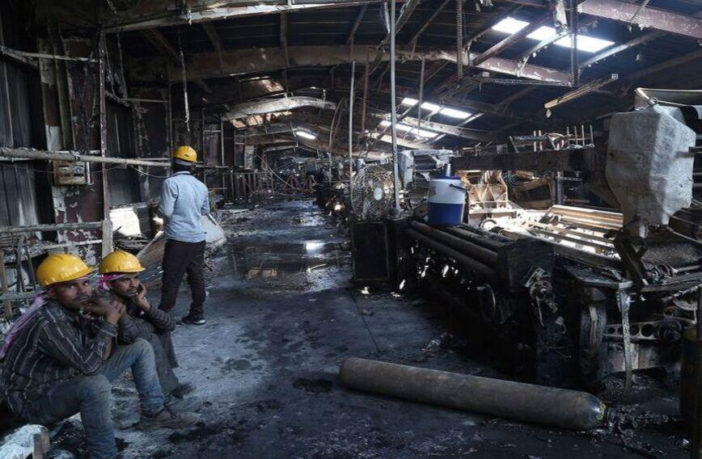
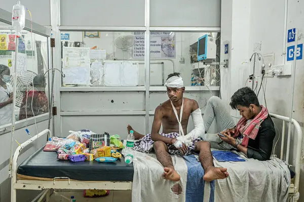

The Challenge
WHAT IS THE PROBLEM?
Many workers remain financially vulnerable to accidents, despite low-cost protection schemes existing.



LOW AWARENESS
Many workers do not know that affordable accidental insurance options exist.
DOCUMENTATION GAPS
Eligibility, paperwork, and bank linkage often become barriers to access.
HIGH FINANCIAL RISK
One accident can deeply affect the income stability of an entire family.
LIMITED SAFETY NET
Workers often remain outside formal financial protection systems.